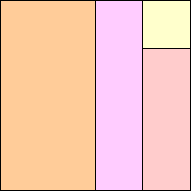
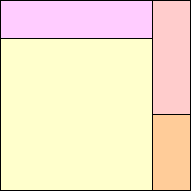
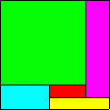
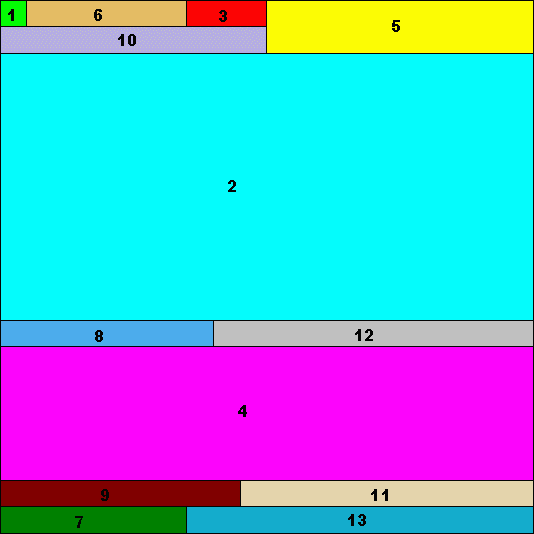

|  |  |
Can you prove there are no other ways to do this? Can you show that we can always cut a square into n rectangles with aspect ratios 1 through n? How many such ways are there? The first square above is dissected into rectangles which are all arranged vertically. Are such aspect ratio dissections where all the rectangles are vertical rare? Can you find a aspect ratio dissection where no rectangle of aspect ratio k touches a rectangle of aspect ratio (k+1)?
Patrick Hamlyn considered aspect ratio dissections of squares 2 through n as well, and didn't find many:
Patrick Hamlyn also looked for aspect ratio dissections of squares only using odd aspect ratios, and found these:
I found this dissection into even aspect ratios, using only vertical rectangles:
Mike Reid also found aspect ratio dissections by hand corresponding to the sequences 3, 5, 7, 9, ... , and 3, 4, 5, 6, ... , and my personal favorite 1, 4, 9, 16, ... .
Patrick Hamlyn also looked for aspect ratio dissections of squares using only prime aspect ratios, and found these:
Patrick Hamlyn also searched for non-touch aspect ratio dissections. He found all of them of size 13 of less, and all of them of size 19 or less with no more than 10 rectangles. Andrew Bayly found one of these of size 12.
Patrick Hamlyn confirmed that a 18×18 square is the smallest that admits a vertical aspect ratio dissection except for the 4×4 square. Andrew Bayly also found another larger vertical aspect ratio dissection:
Patrick Hamlyn also found the smallest tiling that does not contain a subrectangle, and the smallest vertical (or in this case, horizontal) tiling with the non-touch property:
|  |  |
Mike Reid, Clinton Weaver, Sasha Ravsky, and Andrew Bayly showed that aspect ratio dissections exist for all n ≠ 2 since we can extend such a dissection of n rectangles to one with n+2 rectangles, and such dissections exist for n=1 and n=4.
Robert Reid came up with a similar but more complicated extension that could extend non-touching examples. He asks whether n=5 is the only example where an n×n square cannot be dissected.
Jeremy Galvagni noticed that if we pick and choose which aspect ratios to use to dissect a square, that any set of numbers whose reciprocals sum to 1 (like {2,3,6}) easily forms a dissection with vertical rectangles.